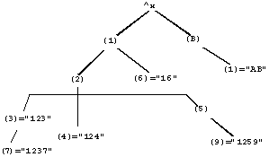

Returns the next subscripted local or global variable node name, independent of level, which follows the node specified by its argument in M collating sequence and has a data value.
The format for the $QUERY function is:
$Q[UERY](glvn)
The subscripted or unsubscripted global or local variable name specifies the starting node from which $QUERY() searches for a node with a data value.
If $QUERY() finds no node after the specified global or local variable, it returns an empty string.
With stdnullcoll, if $Data(glvn(""))=1 (or 11), $Query(glvn("")) returns glvn(1) (assuming glvn(1) exists). Applications looking for a node with a "null" subscript must use $D(glvn("")) to test the existence of glvn(""). $Q(glvn("...")) never returns the starting-point (glvn("")) even though glvn("") may exist.
$QUERY() can be used as a tool for scanning an entire array for nodes that have data values. Because $QUERY() can return a result specifying a different level than its argument, the result provides a full variable name. This contrasts with $ORDER(), which returns a subscript value. To access the data value at a node, a $ORDER() return can be used as a subscript; however, a $QUERY() return must be used with indirection. Because arrays tend to have homogeneous values within a level but not between levels, $QUERY() is more useful as a tool in utility programs than in application programs. The $QUERY() can be useful in avoiding nested $ORDER loops.
Note that the standard does not unambiguously define the state of the naked reference indicator after a $QUERY(). While in GT.M after $QUERY(), the naked reference indicator reflects the $QUERY() argument, NOT its result.
Example:
set ^X(1,2,3)="123"
set ^X(1,2,3,7)="1237"
set ^X(1,2,4)="124"
set ^X(1,2,5,9)="1259"
set ^X(1,6)="16"
set ^X("B",1)="AB"
The tree diagram below represents the structure produced by the preceding routine.

The following routine:
set y="^X" for set y=$query(@y) quit:y="" write !,y,"=",@y
produces the results:
^X(1,2,3)=123
^X(1,2,3,7)=1237
^X(1,2,4)=124
^X(1,2,5,9)=1259
^X(1,6)=16
^X("B",1)=AB
Example:
GTM>zwrite lcl
lcl("")=1
lcl(1)=1
lcl(1,2)=2
lcl(1,2,"")=3
lcl(1,2,"","")=4
lcl(1,2,"","",4)=5
lcl(1,2,0)=6
lcl(1,2,"abc",5)=7
lcl("x")=1
GTM>set y="lcl"
GTM>for set y=$query(@y) quit:y="" write !,y,"=",@y
This example produces the results:
lcl("")=1
lcl(1)=1
lcl(1,2)=2
lcl(1,2,"")=3
lcl(1,2,"","")=4
lcl(1,2,"","",4)=5
lcl(1,2,0)=6
lcl(1,2,"abc",5)=7
lcl("x")=1
Note that the result is the same as the ZWRITE output.